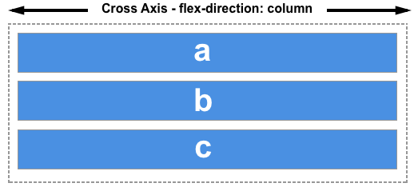

Flexbox
El Módulo de Caja Flexible, comúnmente llamado flexbox, fue diseñado como un modelo unidimensional de layout, y como un método que pueda ayudar a distribuir el espacio entre los ítems de una interfaz y mejorar las capacidades de alineación.
Lo que caracteriza un diseño flexible es su habilidad para alterar el ancho y alto de sus elementos para ajustarse lo mejor posible al espacio disponible en cualquier dispositivo. Un contenedor flexible expande sus elementos para rellenar el espacio libre, o los comprime para evitar que rebasen el área prevista.
Partes del flexbox

- Contenedor: Un área del documento que contiene un flexbox es llamada contenedor flex, que tendrá en su interior cada uno de los ítems flexibles y adaptables.
- Eje principal: Los contenedores flexibles tendrán una orientación principal específica. Por defecto, es en horizontal (fila).
Está definido por flex-direction, que posee cuatro posibles valores:
- row
- row-reverse
- column
- column-reverse
Si elegimos row o row-reverse, el eje principal correrá a lo largo de la fila según la dirección de la línea.

Al elegir column o column-reverse el eje principal correrá desde el borde superior de la página hasta el final — según la dirección del bloque.

- Eje secundario: De la misma forma, los contenedores flexibles tendrán una orientación secundaria, perpendicular a la principal. Si la principal es en horizontal, la secundaria será en vertical, y viceversa
Si el flex-direction (del eje principal) es row o row-reverse el eje cruzado irá por las columnas.

Si el eje principal es column o column-reverse entonces el eje cruzado corre a lo largo de las filas.
 - Ítem: Cada uno de los elemetos flexibles que tendrá el contenedor en su interior.